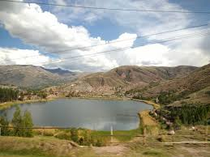
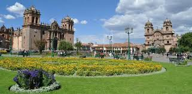

COMIDA
Soy peruano y no como palomas que ya me dijieron muchas veces, bueno la comida que me gusta es: pollo a la braza, tarwi y el chaufa
LUGARES
Los lugares que me encanta ir son: machu pichu, urcos y plaza de armas, son lugares que me encanta ir para relajarse, mayor mente voy por las brisas de viento que son muy calidas y me hacen sentir relajado
IGLESIA LA VID
Ahora uno mis gustos mas queridos es ir a la iglesia la vid ya que para mi es un lugat donde puedo estar alegre y irme de los problemas donde me ayudan a darme soluciones y nunca me hacen sentir solo
Y una palabra le dare al que lea esta pagina: »Por eso les digo: No se preocupen por su vida, qué comerán o beberán; ni por su cuerpo, cómo se vestirán. ¿No tiene la vida más valor que la comida y el cuerpo más que la ropa? 26 Fíjense en las aves del cielo: no siembran ni cosechan, ni almacenan en graneros; sin embargo, el Padre celestial las alimenta. ¿No valen ustedes mucho más que ellas? 27 ¿Quién de ustedes, por mucho que se preocupe, puede añadir una sola hora al curso de su vida?[a] aca jesus dijo que no debemos preocuparnos por los que necesitamos como la comida y la ropa por que dios ya te lo da, solo preocupense en no dejarse llevar y salirse del camino en el que dios puso en su camino para que puedan ser llevados por el espiritu santo, amen